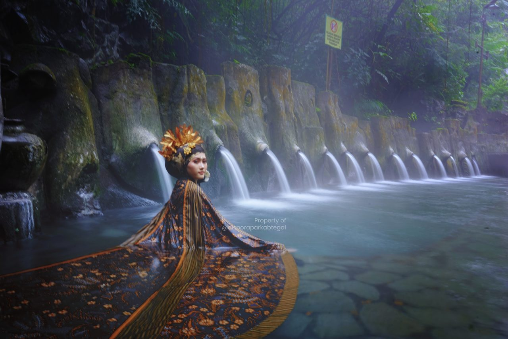

Pemandian Air Panas 13 Pancuran di Guci

Objek 13 pancuran air panas di Wisata Guci memiliki berbagai macam pancuran dengan karakteristik unik masing-masing. Setiap pancuran memiliki tingkat panas yang berbeda, mulai dari yang sangat panas hingga yang lebih sejuk. Ini memungkinkan pengunjung untuk memilih pancuran yang sesuai dengan preferensi suhu mereka. Beberapa pancuran mungkin terasa seperti pijatan lembut, sementara yang lain memiliki aliran air yang lebih deras.
Objek 13 pancuran air panas di Wisata Guci adalah salah satu daya tarik utama yang membuat destinasi ini menjadi begitu menarik. Pengalaman mandi air panas di tengah alam yang indah dan merasakan manfaat kesehatannya membuatnya menjadi tempat yang sempurna untuk bersantai dan melepaskan penat. Jika Anda mengunjungi Wisata Guci, jangan lewatkan kesempatan untuk merasakan keunikan objek 13 pancuran air panas ini.